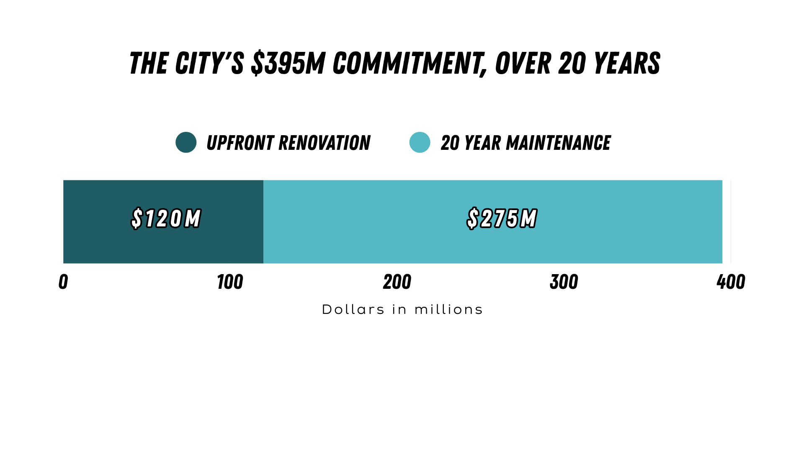

05 — City funding
The city's proposed funding commitment
The city's on the hook for $395M over 20 years under this deal: $120M for construction, up to $275M for maintenance afterward. Here's the breakdown, and how it stacks up against the cost of not renovating (full comparison on the Long-Term Costs page).

$120M: capital contribution toward construction, spent between now and 2030.
Up to $275M: projected maintenance and reinvestment over the 20 years after that, funded through Rose Quarter revenue and a share of the city's business license tax.
Because the city already owns the building, it carries facility costs either way; this number is the city's total 20-year outlay under the approved term sheet, not spending invented from nothing.